// the field guide
Run your signer from the browser.
This is the complete walk through the Sapwood web console: flashing a new board, giving it an identity, connecting apps, shaping what each app may sign, pairing your phone and every panel of the advanced console. Each screenshot below is the real interface. If you prefer a terminal, the same console exists as a command line: see the CLI guide.
BEFORE YOU START
You need three things: a supported board, a USB data cable, and a Chromium browser on a computer. Sapwood talks to the device with the Web Serial API, which ships in Chrome, Edge and other Chromium browsers. Firefox and Safari do not carry it, so flashing and USB management need Chromium; day-to-day remote management works from any modern browser, including your phone.
The supported boards: Heltec WiFi LoRa 32 V4, Heltec WiFi LoRa 32 V3, LilyGO T-Display (ESP32) and Waveshare ESP32-C6 (LCD 1.47). An ESP8266 is supported as a USB-tethered, hardened variant with its own guided setup. See Heartwood for the hardware itself.
Nothing here needs an account and nothing is sent to a server. The app at sapwood.forgesworn.dev is a static page; your browser talks straight to the device on your desk, or to your own signer through end-to-end encrypted relay messages.
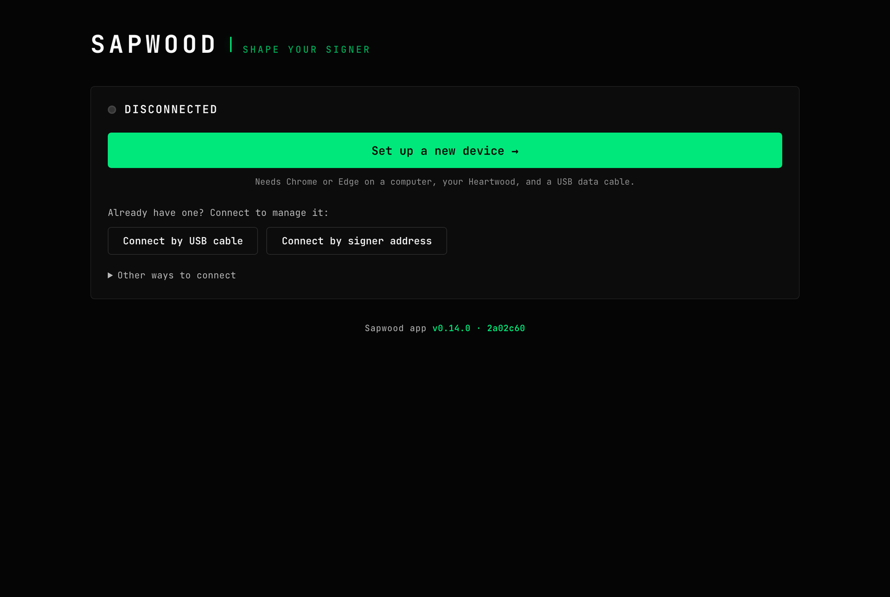
FLASH A NEW DEVICE
Choose Set up a new device and the flasher wizard walks you through four short steps. It installs the signing firmware over the USB cable; your WiFi details are written to the device and never sent over the network.
-
Plug the board in
Use a USB data cable, not a charge-only lead. The wizard's first screen explains what will happen and takes about a minute end to end.
-
Pick your board
The model name is printed on the board itself. Already plugged in? The wizard can work the board out from the cable for you.
-
Choose how it connects
Join my Wi-Fi is the recommended tier: the signer sits on your network, serves apps through relays on its own, and you can manage it from your phone. USB-only is the hardened tier: the radio stays off, the key-holding chip never touches a network, and remote reach goes through the bridge daemon on a computer it stays plugged into.
On the WiFi path you enter your network name and password and can adjust the relay list. Use a 2.4 GHz network; these boards do not join 5 GHz.
-
Review and flash
A summary shows the device, network choice and relays. Press Flash and watch the progress bar; a technical log is one click away if you like detail.
-
Press RESET on the board
When the wizard says the signer is flashed, press the physical RESET button on the board so it boots into the new firmware. The done screen also shows your operator key: twelve words to write down and label 'operator'. They are your management credential for this signer, separate from any signing key.
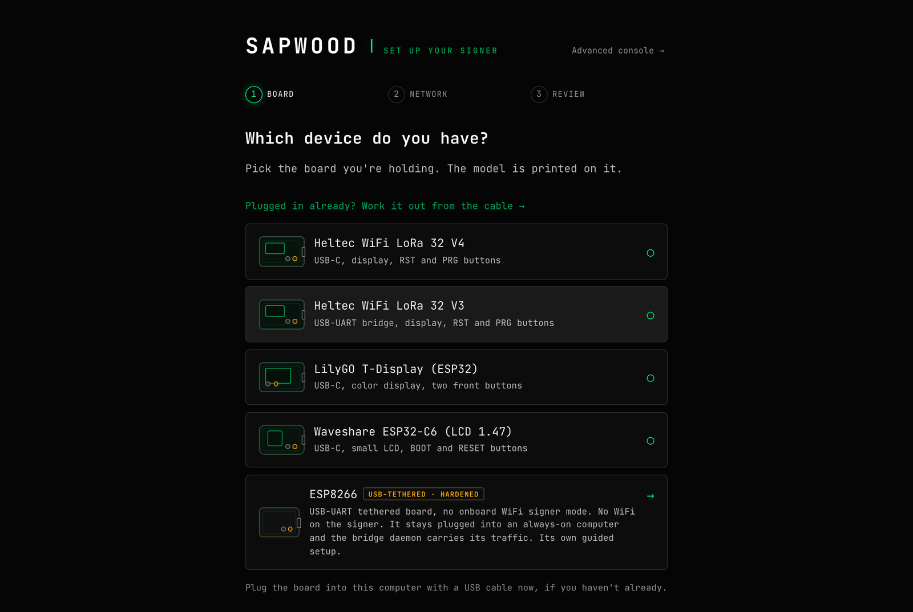
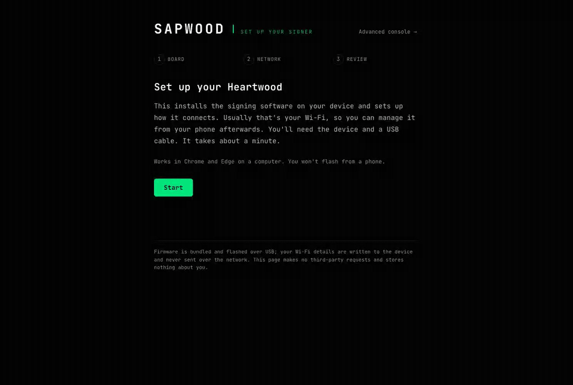
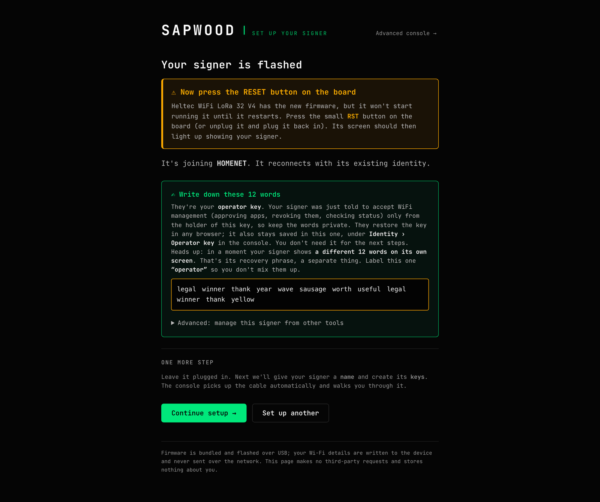
The device will also show a separate recovery phrase on its own screen when you create a signing key. Two phrases, two jobs: the device's words restore your identity, the operator words restore your management access. Label them and keep them apart.
GIVE IT AN IDENTITY
A freshly flashed signer holds no keys. The first time you connect it over USB, Home offers two paths: create a fresh key, or restore one you already have. You do this once; afterwards you connect apps and manage the signer from anywhere.
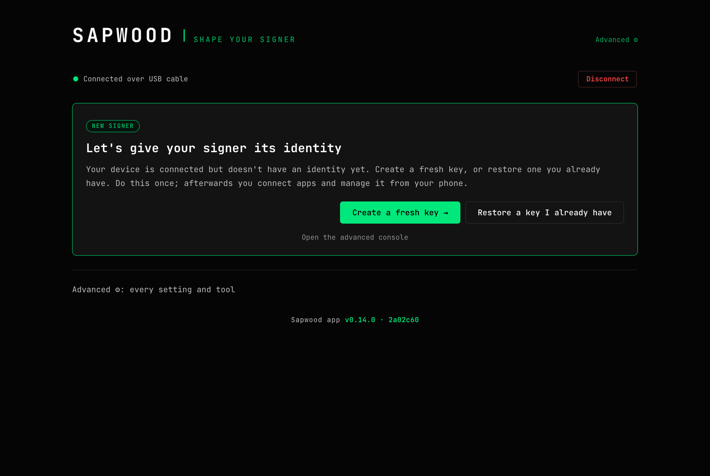
Create a fresh key
Name the signer if you like, then the device generates the key on its own chip. Its screen shows twelve words; you step through them on the device, write them down, and hold the button to save. The secret is born on the device and never exists in the browser.
Restore a key you already have
Four sources are supported. The recommended one is the most private: type your 12 or 24 words on the device itself, using its button and screen, so nothing touches this computer. The faster paths paste a recovery phrase, an nsec, or a password-protected ncryptsec here; the secret goes down the cable once and is wiped from browser memory the moment it is sent.
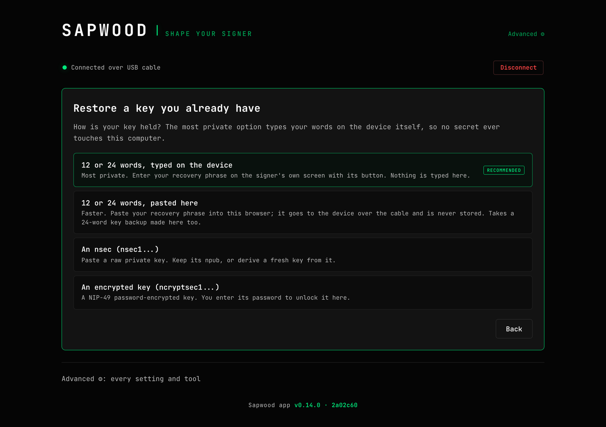
Restoring from an nsec offers a choice: keep your existing npub and sign as-is, or derive a fresh key from it for a new npub. Either way a confirmation screen shows exactly which address the signer will hold before anything is sent, and pasted keys can be backed up as 24 words first.
THE GUIDED HOME
Once the signer has an identity, connecting to it lands on Home: the guided surface with everything a normal day needs, in the order you need it.
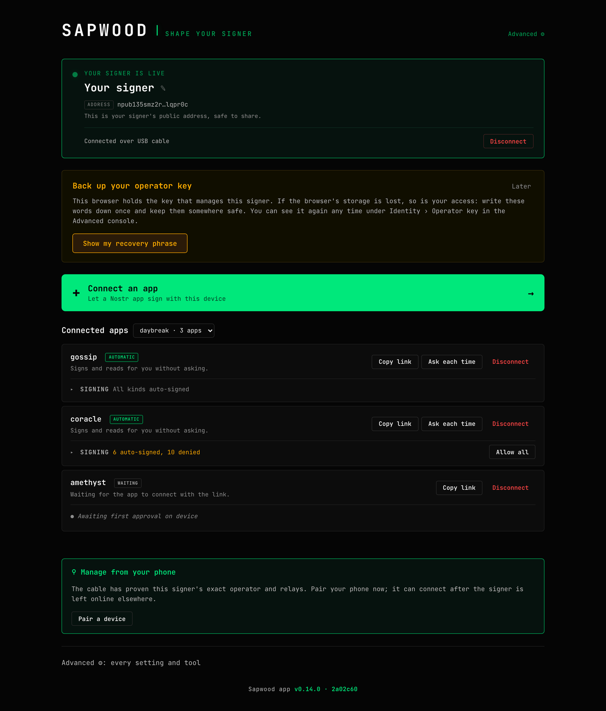
- Your signer is live
- The signer card shows its public address, safe to share, and how you are connected: USB cable, the internet, or a bridge. The pencil renames the signer; Disconnect is always here.
- Back up your operator key
- An amber nudge until you have written the operator words down. This browser holds the key that manages the signer; if the browser's storage is lost, so is your access, unless the words are on paper. The phrase stays available under Identity, Operator key in the advanced console.
- Connect an app
- The green hero button starts the guided pairing flow. Section 05 walks through it.
- Connected apps
- Every app that can sign with this device, its current mood (automatic, asks each time, waiting), a per-app permissions panel, and Copy link, Ask each time and Disconnect actions. With more than one identity a picker chooses whose apps you are looking at.
- Manage from your phone
- Pairs another device with a PIN-protected QR. Section 07.
- Firmware nudge
- When the app bundles a newer firmware than the signer runs, one amber line offers the update and deep-links to the Device panel.
Anything Home does not surface lives behind Advanced, top right. Home returns on every fresh connection; the console remembers nothing about you between visits beyond what your own browser stores.
CONNECT AN APP
Connecting an app takes three steps: name it, choose what it may do,
then hand it the pairing link. The link is a standard NIP-46
bunker:// URI, so anything that speaks Nostr Connect can
use it: Bark,
Cambium, Damus, Amethyst,
noStrudel, Coracle and the rest.
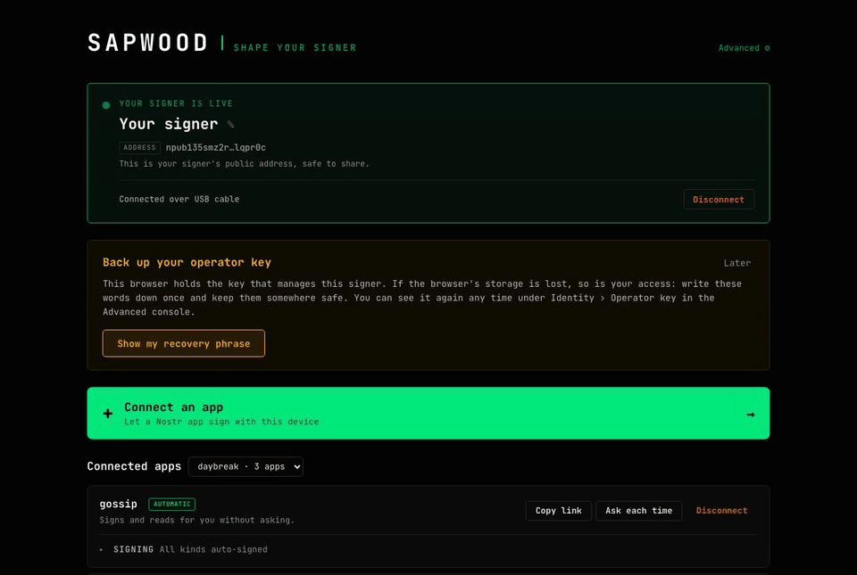
The permission step offers four presets. Posting only covers notes, reactions, reposts, articles and app settings while keeping the app away from your profile and contacts. Everything is for a personal app you trust fully. Messages only suits a chat app. Let me choose opens the exact kind picker.
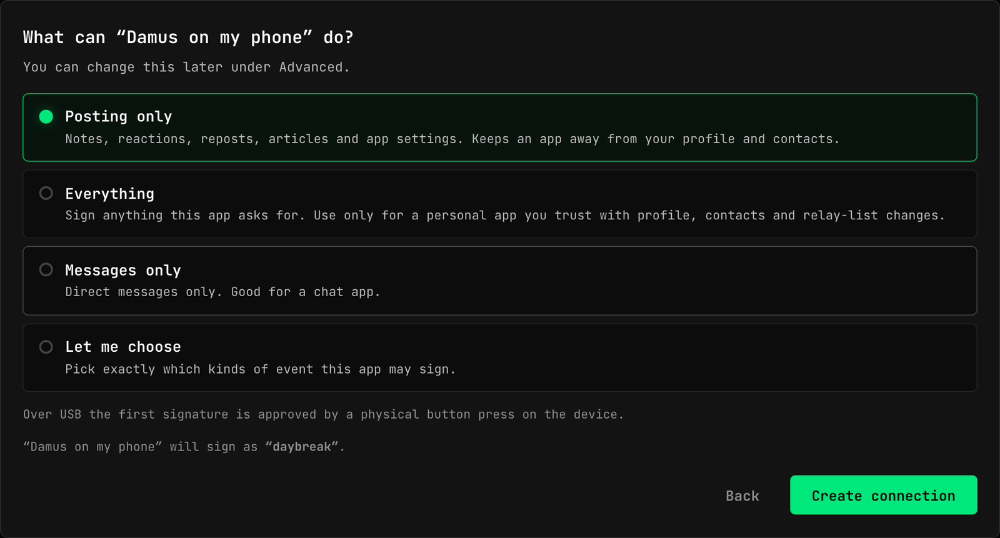
The final step shows a QR to scan and the link to copy, and the new app appears in the list as waiting until it first connects. Over USB, each app's first signature is approved with a press of the physical button on the device; after that its policy applies automatically.
nostrconnect:// link. When you are
connected to the signer over the internet, the connect flow has a paste
option: Sapwood reads the app's link, checks the app shares a relay with
your signer, and pairs it from this side.
PERMISSIONS, EXACTLY
Every app card carries a Signing panel. Each event kind is a chip: green means auto-signed, amber means the device's button must approve it, red means denied. The summary line keeps the score, and Allow all or a custom kind number are one action away.
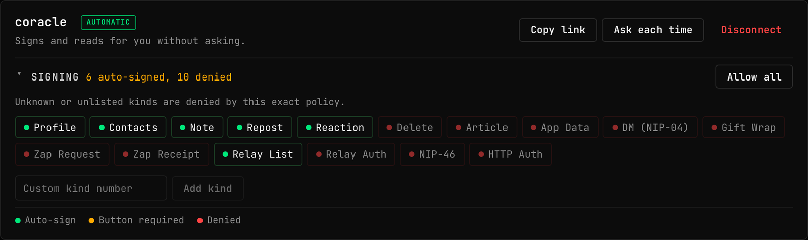
Policies fail closed. An app with an exact policy cannot sign a kind you never listed, and unlisted methods are refused outright; the ceiling is enforced by the signer itself, not by the page. Switching an app to Ask each time keeps it connected but routes every request through the device's button; switching back to automatic restores the policy.
MANAGE FROM YOUR PHONE
A WiFi signer does not need this computer once it is set up. The phone handoff moves your management credential to another device through a protected QR: you set a PIN of six characters or more, the operator key is encrypted with it, and the QR opens the console on the phone, which asks for the PIN. A photograph of the QR alone is useless.
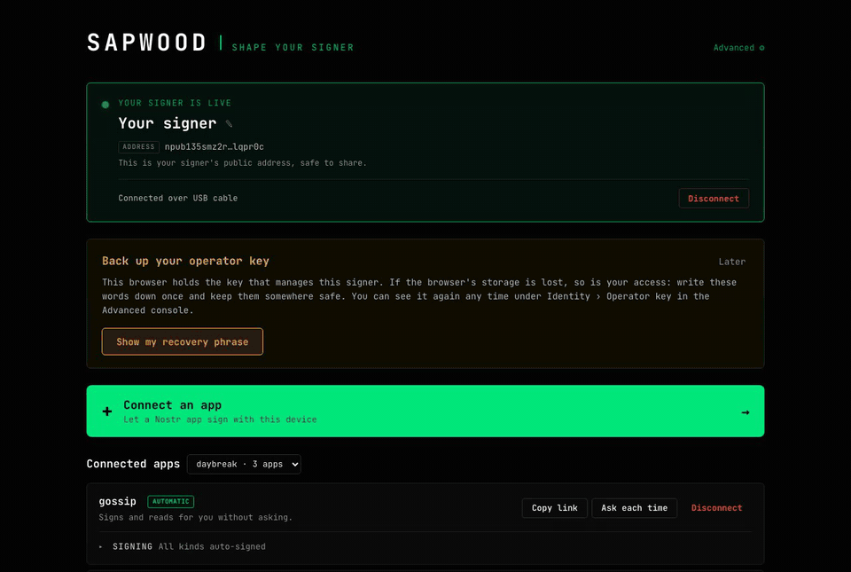
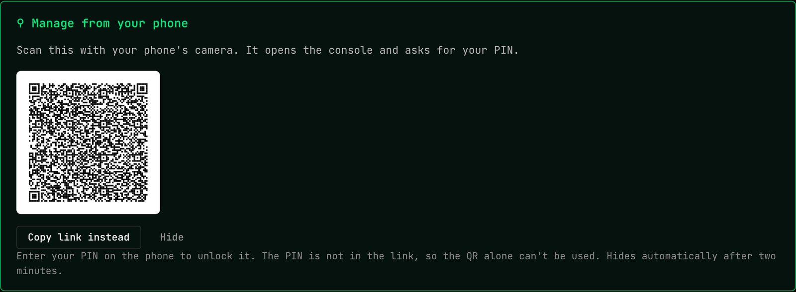
Pairing only unlocks when the connection has proven exactly which operator and relays the signer trusts: over USB the cable proves it, over the internet an authenticated status reply does. If the card says pairing is locked, that proof is missing, and the card says why.
THE ADVANCED CONSOLE
Advanced, top right, opens the full console: four sections, every setting and tool. Home hides nothing you need daily; Advanced hides nothing at all.
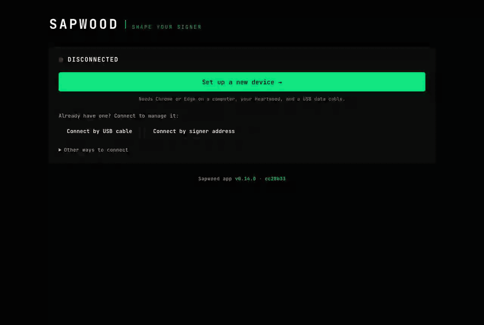
Apps
The working surface for connections. Create a new connection with a name, pre-authorise signing when your operator key allows it, approve or deny anything the signer queues for a decision, and manage every connected app: its link, its permissions, its automatic or manual switch, and its removal.
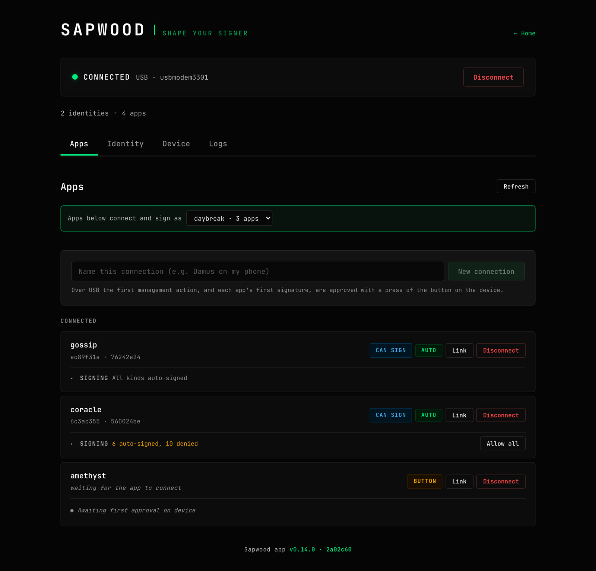
Identity
Everything about who the signer is. The identity list shows each slot
with its type and full npub. The identity card pushes your name and
picture to the signer's screen. The short address panel generates the
nostr.json for a NIP-05 name you host anywhere. Add an
identity provisions another key: from a phrase, an nsec, or, most private of all,
derived by name on the device itself, where typing a name mints a new
identity from a master the signer already holds and no secret exists
anywhere else. The operator key panel shows, restores and regenerates
the management credential, and profile relays tune where names are
looked up.
Device
The machine itself. Connection details with uptime, restart reason and memory health. Network mode: WiFi-standalone or USB-only radio-off, with an SSID scan, relay editor with live health dots, and rollback-safe saves; a network change is staged, tried and abandoned automatically if the signer cannot reach the new route. Firmware updates flash the version bundled with the app, verified against its SHA-256 and release signature before a byte is committed, and approved by holding the device's button for two seconds. Security holds the boot PIN and bridge secret. The danger zone disconnects every app at once, or factory resets the device.
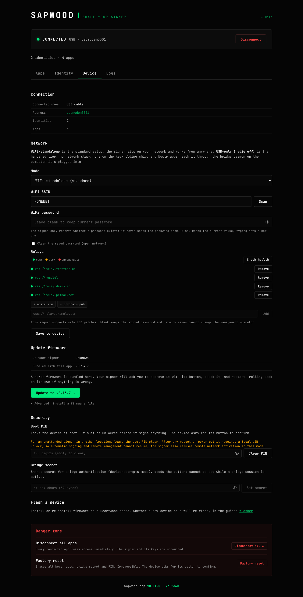
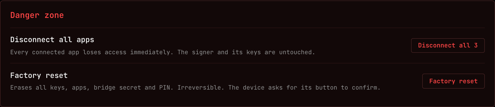
Logs
Two views of the signer at work. Signer activity decodes recent requests: which app, which kind, signed or denied and why. The device log is the raw stream underneath. Both make policy visible: watch a request arrive, meet its policy, and leave signed, or stop at the line it broke.
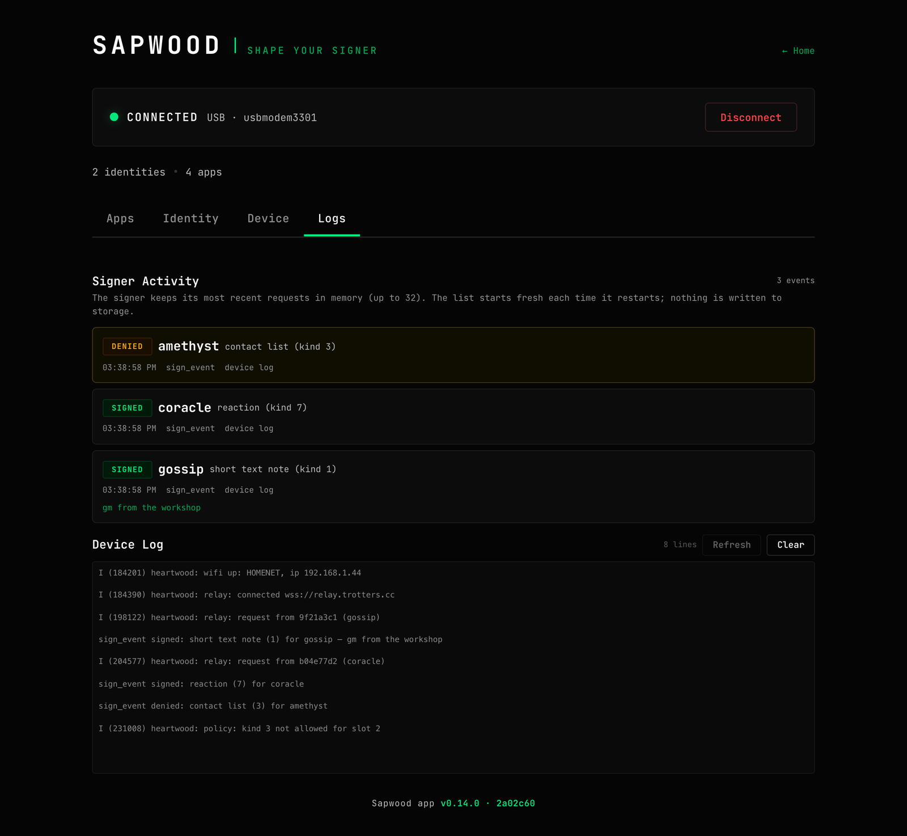
RECONNECTING, THREE WAYS
USB. Plug the cable in and choose Connect by USB cable. The browser asks which port; pick the board. Everything works over the cable, including the operations that deliberately need it: provisioning, firmware, PIN, factory reset.
SIGNER ADDRESS. Connect by signer
address reaches a WiFi signer from anywhere: enter its npub, or a NIP-05
name like you@example.com, and the relays it uses.
Management commands travel end-to-end encrypted; relays carry
ciphertext they cannot read. Your operator key, in this browser, is
what makes the signer answer.
BRIDGE. For a tethered signer on a Pi or any Linux box, Other ways to connect reaches the keyless bridge daemon on your LAN: the same console plus daemon health and restarts.
A phone that scanned the handoff QR skips all of this: the link carries the address and relays, the PIN unlocks the operator key, and the console connects itself.
WHEN SOMETHING FIGHTS BACK
- Just flashed, not found
- Press RESET on the board first; the new firmware only runs after a reboot. Then connect by USB cable again.
- Silent over the cable
- A WiFi signer can take up to a minute to answer while it brings its radio up. Home offers a retry, and can reach a known WiFi signer over the network instead. Check the cable carries data, not just charge.
- Relay connects, signer does not answer
- Almost always the operator key. The signer only answers the exact operator it was flashed with; restore that recovery phrase in this browser, then disconnect and reconnect. The other suspects: the signer lost WiFi, or you listed relays it does not use.
- WiFi join fails
- The console lifts the reason out of the log for you. Usual causes: a 5 GHz-only network, a captive portal, or a mistyped password. Use a 2.4 GHz WPA2 network or a phone hotspot.
- Firmware shows unknown
- Firmware older than the version query reports nothing. Update over USB from Device, Update firmware; every later update can happen over the air.
- Factory reset refused over WiFi
- By design. Wiping the signer requires it in your hands, on a USB cable, with its button held. The same is true of firmware, PIN and provisioning: physical-presence gates do not negotiate.
- No USB option in this browser
- Firefox and Safari do not ship Web Serial. Use Chrome or Edge for cable work, connect by signer address from any browser, or use the CLI, which needs no browser at all.
Still stuck? The issue tracker is read by the people who wrote the firmware. Include the device log from the Logs section; it carries no secrets.